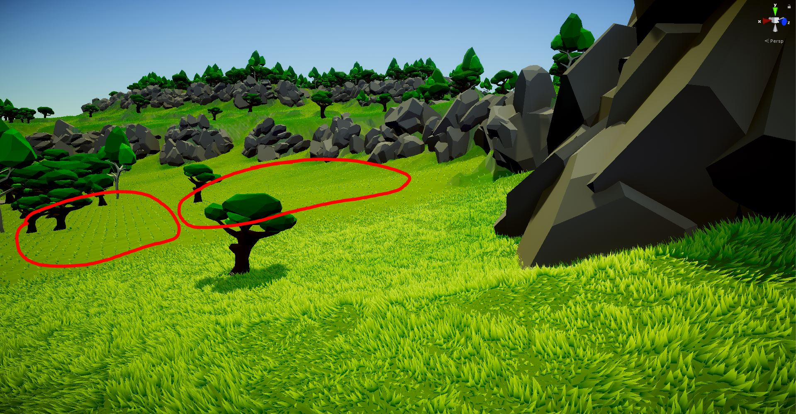
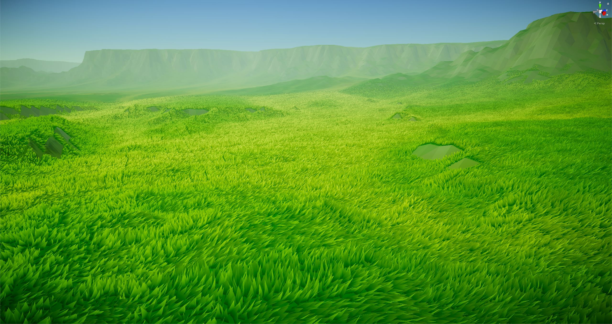
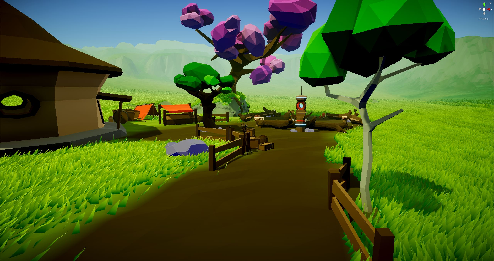

Most games when it comes to grass use billboards, which are basically a quad (two triangles to form a square) with a grass texture painted on top that always faces the camera. To make grass look nicer you could stick more than a single quad together to give the illusion of having separate blades of grass. A few weeks back I stumbled upon a tutorial by Erik Roystan Ross on a Geometry grass shader. Geometry shaders actually generate new triangles at runtime making them an extremely (albeit complex) tool for creating interesting effects.
Now, there are a few problems in using this shader on Elements or on any large-scale world. The first and most obvious is scale, in the tutorial we're dealing with a very small area while in we have a massive terrain (actually a mesh if you remember) so generating that amount of triangles would make any PC crawl to a halt. The second problem is slope, in the tutorial, we're generating a blade of grass for each vertex without distinction of any kind for slope, height etc. Last but not least is that it's a geometry shader which means we can no longer use Unity's handy surface shader to automagically tessellate vertices, but we have to understand how hull and domain shaders work in order to modify it for our needs.
In this post I'll show how we decided to create a version of this shader that fit our needs. If you're interested in achieving a similar result to our own, follow along. This is how it looks when complete:
So let's get started, first of all you need the grass shader and the "CustomTessellation.cginc" from the tutorial linked above. The first thing we'll do is implement a distance based tessellation, to do so we need to modify the CustomTessellation.cginc file. In this file, the "patchConstantFunction" is what defines how much an edge must be subdivided. Right now, it's subdividing equally using the inspector value _TessellationUniform, instead we want to return some value based on the distance from the camera (and from _TessellationUniform). To do so we'll add a function that takes two vertices as an input and outputs a factor that describes how much that patch has to be subdivided (if at all) using the distance from the camera. In code:
float TessellationEdgeFactor(vertexInput cp0, vertexInput cp1){
float3 p0 = mul(unity_ObjectToWorld, float4(cp0.vertex.xyz, 1)).xyz;
float3 p1 = mul(unity_ObjectToWorld, float4(cp1.vertex.xyz, 1)).xyz;
float edgeLength = distance(p0, p1);
float3 edgeCenter = (p0 + p1) * 0.5;
float viewDistance = distance(edgeCenter, _WorldSpaceCameraPos);
return clamp(1.0 - (viewDistance - _minDist) / (_maxDist - _minDist), 0.01, 1.0) * _TessellationUniform;
}
Now, in the patchConstantFunction we change the return value to our new custom function instead of a fixed amount:
TessellationFactors f;
f.edge[0] = TessellationEdgeFactor(patch[1], patch[2]);
f.edge[1] = TessellationEdgeFactor(patch[2], patch[0]);
f.edge[2] = TessellationEdgeFactor(patch[0], patch[1]);
f.inside = (TessellationEdgeFactor(patch[1], patch[2]) +
TessellationEdgeFactor(patch[2], patch[0]) +
TessellationEdgeFactor(patch[0], patch[1])) * (1 / 3.0);
//f.edge[0] = _TessellationUniform;
//f.edge[1] = _TessellationUniform;
//f.edge[2] = _TessellationUniform;
//f.inside = _TessellationUniform;
And as far as the tessellation goes, we're pretty much done! Now unto the grass shader itself, the first change we made, to try and make it slightly faster is to reduce the amount of vertices per grass blade. In the grass shader file there's a define statement called BLADE_SEGMENTS, we just changed it to 2 instead of 3.
Now we need to solve the problems we were talking about, almost everything we need to change is in the "geo" function (that's the one generating the grass blades). One way to do it would be nesting if statements for slope, height etc. but as you may know, if statements are pretty inefficient in shaders so we tried to narrow it down to a single one. to do so, we added some lines to the geo function:
float3 worldPos = mul(unity_ObjectToWorld, IN[0].vertex.xyz);
float3 worldNormal = mul( unity_ObjectToWorld, float4( IN[0].normal, 0.0 ) ).xyz;
float slope = worldNormal.y;
float dist = distance(_WorldSpaceCameraPos, mul(unity_ObjectToWorld, IN[0].vertex).xyz);
You may notice we're still getting the distance from the camera. You may think it doesn't make sense to check for distance since we're doing that at the tessellation level, but the tessellation is only responsible for further subdivision of the mesh, and doesn't stop the geometry shader from generating the grass blades. So what would happen is this: tessellation wouldn't occur because the camera is too far away but the geometry step would still generate a grass blade for every triangle. However, since there's very few triangles without tessellation you would have one grass blade every 10 or so meters. This is an example (fog is disabled to help you see):
So now we need a way to check if all these values are within the range we want (most of them are tied to the inspector). To make a single if statement we simply do this:
int shouldCreateGrass = sign(slope-_SlopeLimit) + sign(_maxDist - dist) + sign(pos.y - _BeachLimit) + sign(_HeightLimit- pos.y);
//we stick all the vertex generation code in this if statement
if(shouldCreateGrass==4){
...
}
Now the shader should be working, but if you read our Terrain post, you'll know we have a flowmap that's changing the color of the terrain. The problem here is the grass all has the same color and it's obscuring the color change underneath. To solve it we use the same texture and we add this line inside the if statement:
float depositSample = tex2Dlod(_DepositTex,float4(pos.xz / _size,0,0));
Now we need to pass this in the fragment function so make sure to add it as a float in the geometryOutput struct. After that we need to modify the fragment return value to account for it:
float4 col = lerp(_BottomColor, (_TopColor + (i.deposit * _DepositColor)) * lightIntensity, i.uv.y);
And we're done!
Final Touch
We talked about adding vertex coloring in the Terrain post so if for example we wanted to make a stone path using just the color we would have a problem: the grass would still render normally. To remedy that we need to change the tessellation factor to account for wether or not we want grass in that position. This is not an easy fix but we did come up with a solution for it. We would use the terrain editor painter to generate a texture and we would paint black the areas where we didn't want grass. To add support for this, we need to add another texture and reference it in the CustomTessellation file, more specifically in the TessellationEdgeFactor function:
float grassMask = tex2Dlod(_GrassMask,float4(p0.xz / _size,0,0));
...
// don't need this anymore return clamp(1.0 - (viewDistance - _minDist) / (_maxDist - _minDist), 0.01, 1.0) * _TessellationUniform;
return clamp(1.0 - (viewDistance - _minDist) / (_maxDist - _minDist), 0.01, 1.0) * _TessellationUniform * smoothstep(1,_TessellationBlending,grassMask);
To finish we need to add it to our if statement on wether to generate the grass vertex or not:
float grassMask = tex2Dlod(_GrassMask,float4(pos.xz / _size,0,0));
int shouldCreateGrass = sign(slope-_SlopeLimit) + sign(_maxDist-dist) + sign(pos.y - _BeachLimit) + sign(_HeightLimit- pos.y) + sign(1 - grassMask);
if (shouldCreateGrass==5){
...
}
And we're done! This is an example of a path with no grass:
Here's a video of the grass in action: